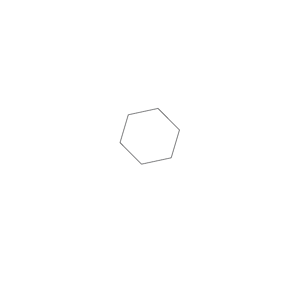
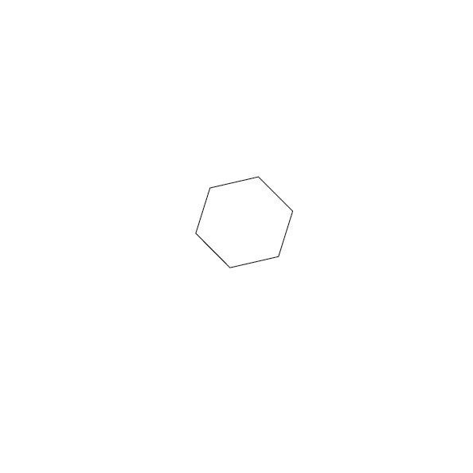
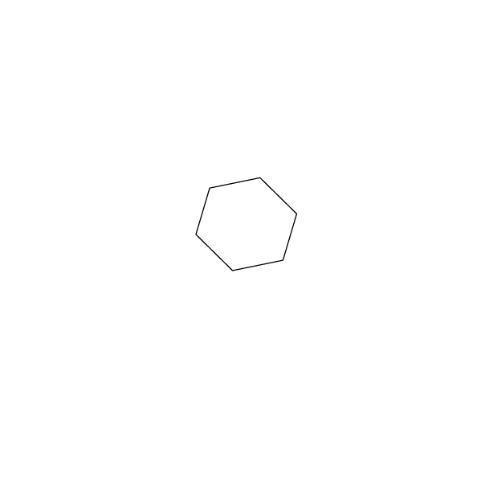

- Open Illustrator
- open a new 8.25 x 8.25 file that has 1 artboard
- Use the polygon tool to make a polygon
- Use the selection tool to select the polygon you've made
- In the properties tab, in the appearance section change the stroke value to 1 pt
- In the properties tab, in the appearance section make sure the "fill" is white
- In the properties tab, in the transform section change the X value to 4.26 inches
- In the properties tab, in the transform section change the Y value to 3.877
- In the properties tab, in the transform section change the W value (width) to 1.69 inches
- In the properties tab, in the transform section change the H value (height) to 1.584
- In the properties tab, in the transform section change the angle (where the angle symbol is. It is right underneath the Y value) to 253.49 degrees
- Make sure all values are correct
- Now choose file > Export > Export to screens
- Set "Export to" as your desktop
- Set the file format to a PNG
- Set the scale to 1x
- Then click "Export Artboard"
- Email your PNG to: kthoma37@masonlive.gmu.edu